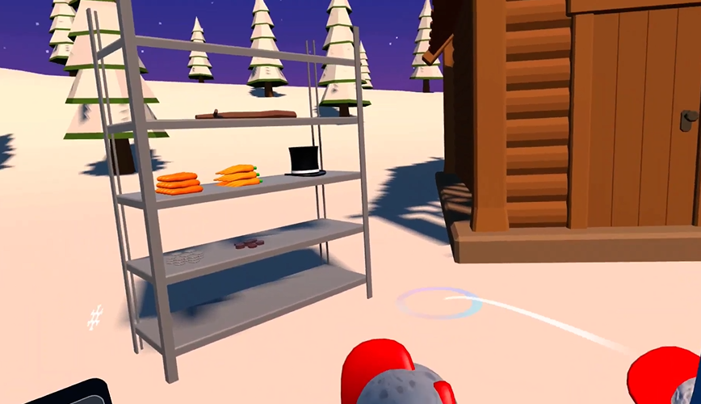
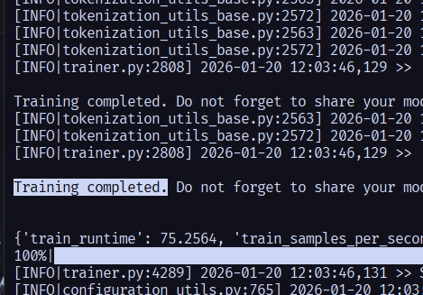
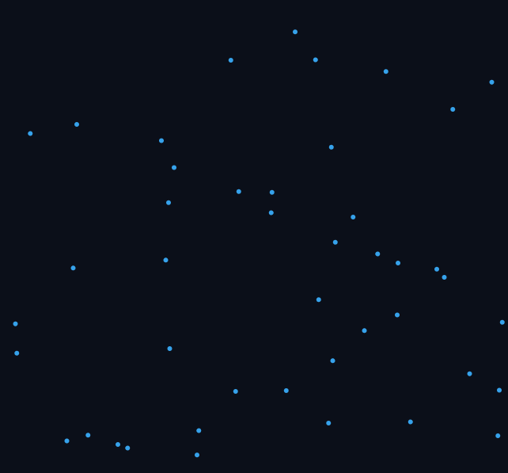
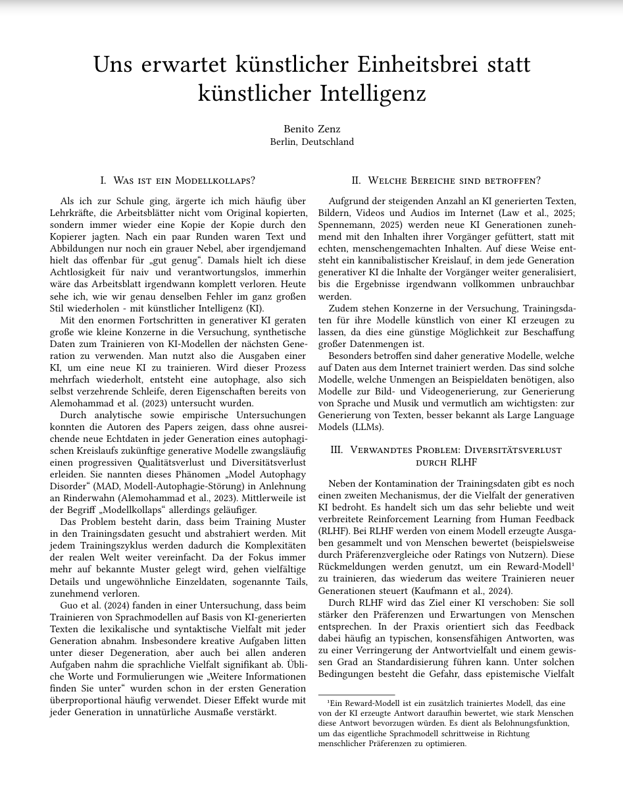
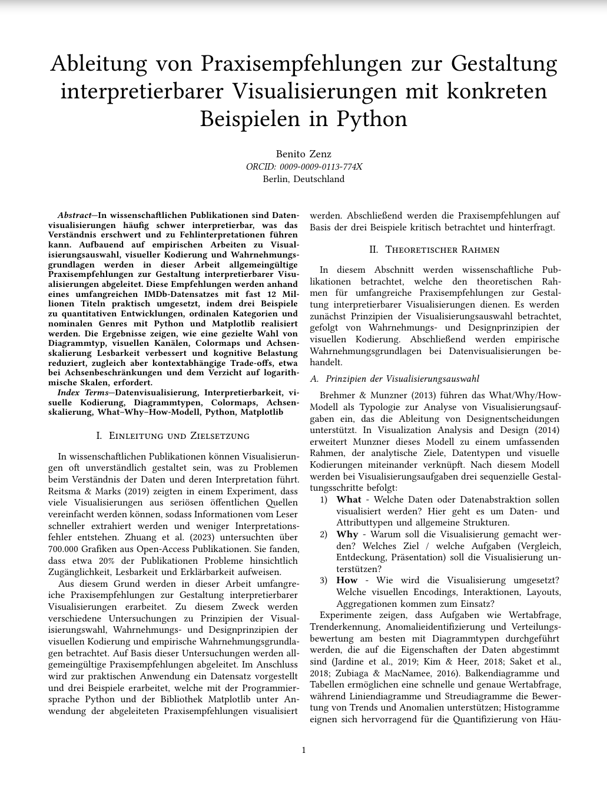
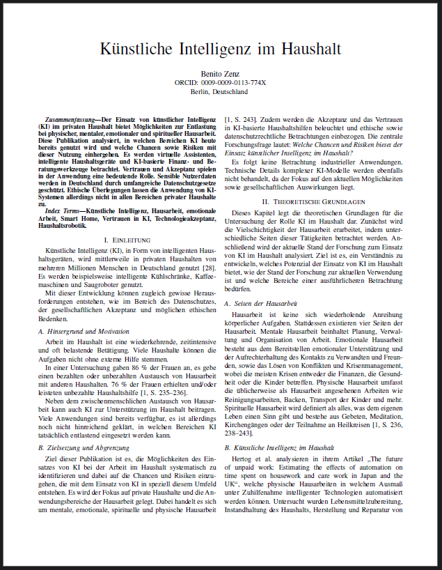

Augmented Reality
Entwicklung interaktiver AR-Erlebnisse, die digitale Inhalte nahtlos in die reale Welt integrieren. Erfahrung mit markerbasiertem und markerlosem Tracking.
ARAI & XR Engineer · Data Science M.Sc. Student
Breites Spektrum an Erfahrung in modernsten Technologien — von immersiven XR-Welten bis zur Optimierung großer Sprachmodelle.
Entwicklung interaktiver AR-Erlebnisse, die digitale Inhalte nahtlos in die reale Welt integrieren. Erfahrung mit markerbasiertem und markerlosem Tracking.
AR
Gestaltung immersiver VR-Umgebungen für Training, Simulation und Spiel. Fokus auf performante 3D-Szenen und intuitive Benutzerführung.
VR
Anpassung großer Sprachmodelle an spezifische Domänen und Aufgaben. Erfahrung mit LoRA, QLoRA und Agentensystemen für optimierte Modellantworten.
NLPDesign und Training neuronaler Netze für Klassifikation, Objekterkennung und generative Modelle. Vertraut mit NumPy, Scipy, Scikit-learn, Pandas und modernen Architekturen.
ML
Einsatz von Vektordatenbanken wie Qdrant und MongoDB für semantische Suche, RAG-Pipelines und effiziente Ähnlichkeitsabfragen.
DataBreite Erfahrung in verschiedenen Sprachen und Ökosystemen — von Data Science bis Spieleentwicklung.
Primäre Sprache für Data Science, Machine Learning und Backend-Entwicklung. Täglicher Einsatz von NumPy, Pandas, PyTorch, Scikit-learn und FastAPI.
Entwicklung interaktiver 3D-Anwendungen und Spiele mit der Unity Engine. Erfahrung in XR-Integration, Shader-Programmierung und performanter Echtzeitgrafik.
Erfahren in modernem ES6+, React, Node.js und TypeScript. Einsatz für Webentwicklung, Datenvisualisierung und interaktive Prototypen.
Akademische Beiträge an der Schnittstelle von Machine Learning und angewandter Informatik.

Wenn neue KI-Modelle überwiegend aus den Ausgaben ihrer Vorgänger lernen, verlieren sie nach und nach den Kontakt zur Komplexität der Welt. In diesem Fach-Artikel bewerte ich die Ernsthaftigkeit dieses Problems und gebe einen Überblick über den Stand der Forschung bezüglich neuester Gegenmaßnahmen.

Aufbauend auf empirischen Arbeiten zu Visualisierungsauswahl, visueller Kodierung und Wahrnehmungsgrundlagen leite ich in dieser Arbeit allgemeingültige Praxisempfehlungen zur Gestaltung interpretierbarer Visualisierungen ab.

Der Einsatz von künstlicher Intelligenz (KI) im privaten Haushalt bietet Möglichkeiten zur Entlastung bei physischer, mentaler, emotionaler und spiritueller Hausarbeit. In dieser Publikation analysiere ich, in welchen Bereichen KI heute bereits genutzt wird und welche Chancen sowie Risiken mit dieser Nutzung einhergehen.
Von den Grundlagen der klassischen Bildung bis zur Spezialisierung in Data Science.
Vertiefung in Machine Learning, Deep Learning, DSUC und Big Data Analytics. Schwerpunkt auf angewandter KI-Forschung und Datenexploration.
Work in ProgressFundament in Algorithmen, Datenstrukturen, Softwareengineering und Datenbanken. Abschlussarbeit im Bereich angewandter KI.
Allgemeine Hochschulreife mit Schwerpunkt auf Mathematik, Chemie, Deutsch und Latein. Grundstein für die akademische Laufbahn.
Du hast ein spannendes Projekt oder möchtest dich vernetzen? Ich freue mich auf deine Nachricht.